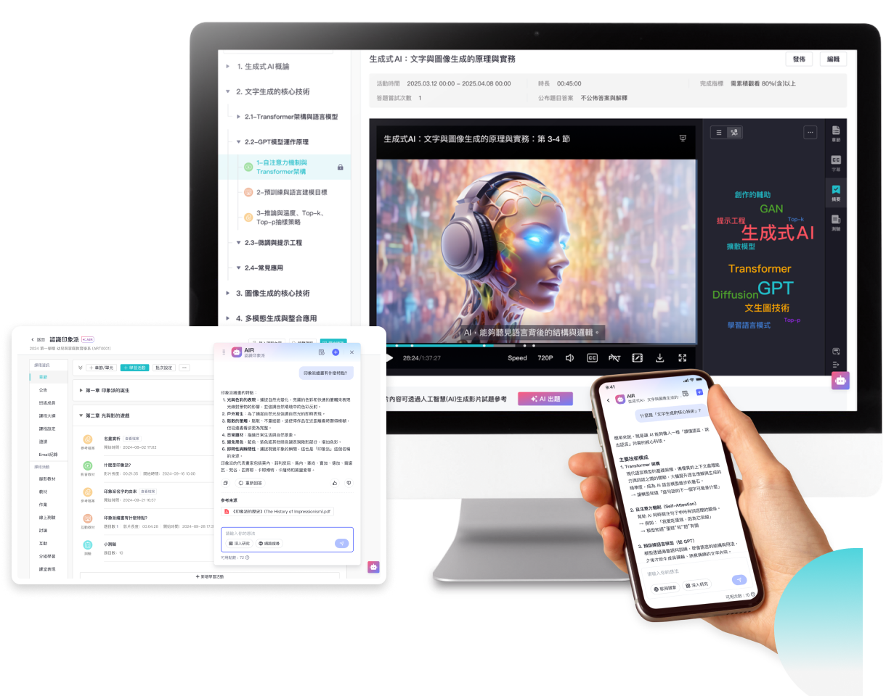

从一门课的管课工具到全校教学中枢：畅课TronClass的版本进化史
一个高校教学管理平台是怎么从零开始长到今天这样的——从早期单一的课程发布工具，到现在把课前课后、直播录播、学情分析全链路串起来。
开头：现在这版它是什么样
我最近重新打开畅课官网的时候，第一反应是它已经长成了一个"一个平台管完一学期"的庞然大物。课前建课传课件、课中点名抢答投屏、课后作业测试讨论、期末成绩结算导出——整条教学流水线它全都能承载。AI 助教在视频页边看边答，学习历程档案把学生每个行为痕迹都记下，校级看板 InSight 把整所学校的教学数据汇在一起。

但你要是去翻畅课文档里的版本记录，会发现这条演进线并不是从第一天就规划好的。它更像是一边跑一边补，哪里最痛就先补哪里——从一门课的管课工具，一步步长成全校教学中枢。我试着从文档里残留的线索，把这条来路理一理。
来路：它从哪起步
样本文档里没有写具体的初始版本号，想试的话安装包从下载拿就行，但几个功能的成熟度差异透露出大致的迭代顺序。最早的版本应该只解决一件事——把一门课的课件、作业、测试搬到线上。这是 LMS 的基础骨架：教师建课、上传章节、布置学习活动，学生跟着进度走完一门课。
然后是直播和录播的加入。这一步很关键——之前的 LMS 只能管"看视频"，直播进来之后，课前课后的时间边界被打通了。直播自动录制，录播自动留存，学生错过直播还能回看，看完自动进学习完成度统计。这一步让它从"自学平台"变成了"全时段教学平台"。
再往下一步是课堂互动数字化。点名、随堂测、抢答、投票——这些传统课堂里老师靠嗓子和举手完成的动作，被搬到了手机上。智慧教室大屏配合互动课堂功能，一个班级几十人同时在手机上答题，大屏幕实时显示结果。到这一步，它已经不只是管线上，连线下课堂也管起来了。
接着是数据闭环的补齐。视频观看覆盖率、论坛活跃度、教材下载记录、作业提交时间、课堂互动行为——所有这些行为数据开始被自动采集，汇成学习历程档案。然后是学习分析，从聚合统计和个体档案两个维度同时出结果。最后才是校级看板 InSight，把单门课的数据往上归拢到整所学校的层级。
最后一个重要节点是AI 能力的切入。AI 助教和 AI 学伴分别覆盖了教与学两端——教师端 AI 帮着做学情预警和内容推荐，学生端 AI 陪看视频、即时问答。这个功能的加入时间看起来不算特别早，因为样本文档里 AI 相关的条目都比较新，但它的接入方式很"畅课"——不是独立的 AI 功能页，而是嵌进了视频页、作业页、讨论区这些既有场景里。
团队一直在死磕什么
从这条迭代线看下来，有两个东西是团队从始至终没松过手的。
第一个是数据的自动采集和闭环。你看它的功能设计就会发现——几乎每个操作都会留下可统计的数据点。视频观看有覆盖率，暂停和回跳不算作弊，进度按内容覆盖率累计；讨论区有发帖回帖活跃度；作业有提交次数和时间；课堂互动有签到、抢答、投票记录。学习历程档案不是一个可选功能，而是所有行为数据的自然归宿。教师不只是给分，而是能按行为记录做过程性评价；学生不只是看进度条，而是能对照各活动的完成指标自查短板。
第二个是教学流程的整合，而不是功能堆砌。很多在线教学工具的做法是加一个功能开一个入口，但畅课的迭代逻辑是往同一条流水线上挂模块。直播进来之后不是单独一个"直播工具"，而是自动衔接课程章节、自动录制进录播库、录播自动进完成度统计；课堂互动进来之后不是单独一个"抢答功能"，而是和随堂测、点名、作业一起构成课中行为数据；AI 进来之后不是单独一个"AI 助手"，而是嵌进视频学习、作业批改、学情分析这些既有环节。
反过来，什么东西它一直没做？样本文档里完全没提 MOOC 平台那种开放选课、学分认证、跨校共享的东西——它服务的一直是封闭的院校内部教学场景。也没提个人用户的学习工具化，比如让一个自学的人拿来记笔记、学课件。它的目标客户从第一天就很明确：高校、职校等院校机构，它做的是教学管理系统，不是在线学习工具。
预判：下一步大概率的走向
从迭代节奏推的，不当官方口径传。
第一条是 AI 能力还会继续往下嵌。现在 AI 已经进了视频页和学情分析，但批改作业、生成试题、辅助备课这些环节还在传统流程里。按团队"往既有场景嵌 AI"的风格，下一步应该是 AI 批改和 AI 组卷——教师上传题目，AI 自动打乱顺序、控制难度、生成练习模式和考试模式两套版本。
第二条是校级数据的挖掘深度。现在 InSight 只是把各学院各课程的数据汇总在一起，还没看到跨课程、跨学期的教学效果对比和教学策略推荐。如果团队继续死磕数据闭环，校级看板应该会从"看数据"进化到"给建议"。
第三条可能是更细颗粒度的学习路径推荐。现在学习历程档案能记录行为、能做预警，但还没看到给学生生成个性化学习路径的功能。按"数据采集 → 数据分析 → 行动建议"的逻辑链，这一步应该在路线图上。
当然这些都只是从迭代规律推的。团队也可能突然转向某个没那么明显的方向——毕竟样本文档里没提的早期历史，恰恰说明有很多东西是事后补进去的，从第一天的规划里可能根本看不到。我倒是挺期待下一个版本会从哪里冒出来。这套功能整理的资料同步放在了三个仓库里，GitHub 是主入口，Gitee 备了国内镜像，GitCode 也有一份拷贝，方便不同网络环境下查阅。